Reports with Cross-Band Content and Populated Empty Space
This document describes how to create a report with the following layout options:
- Print part of the content across bands (the blue panel);
- Populate the empty space between the detail and footer information with blank rows.
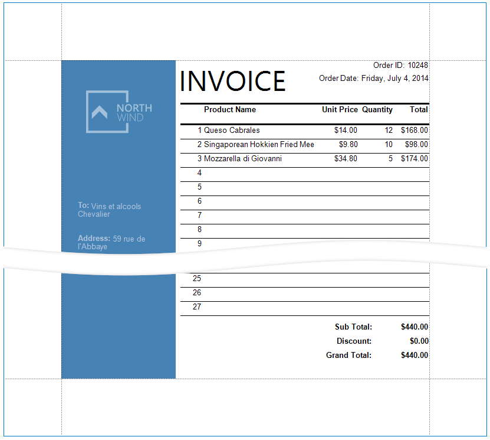
Initial Report
In this tutorial, the report groups data by a data source field (the report's group field).
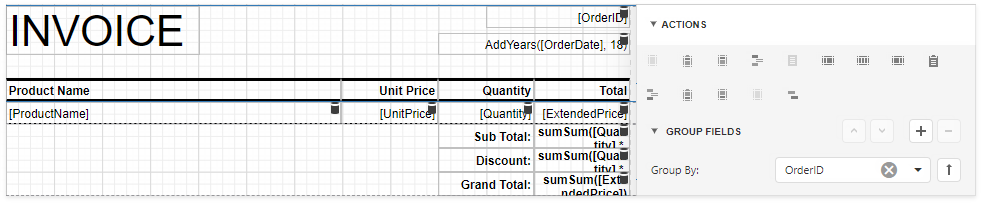
The GroupFooter band is displayed at the bottom of the page (the Print At Bottom property is enabled). There is an empty space between the Detail band's data and the footer.
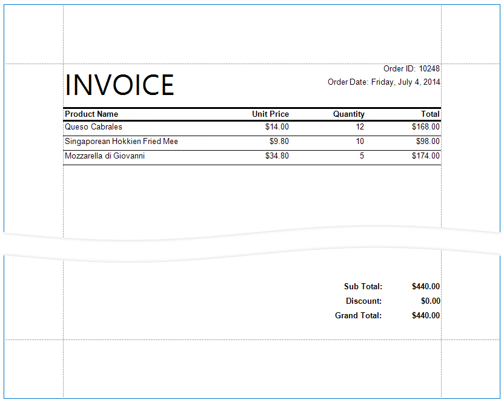
Add Line Numbers
Select the first cell in the Detail band's table and click Insert Column to the Left from the cell's context menu.
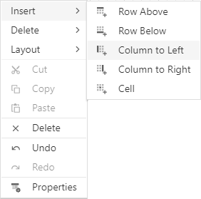
Select the new cell and set Summary/Running to Group.
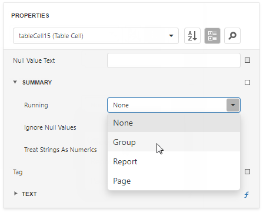
Switch to the Expressions tab and click the Text property's ellipsis button. Specify the sumRecordNumber() expression in the invoked Expression Editor.
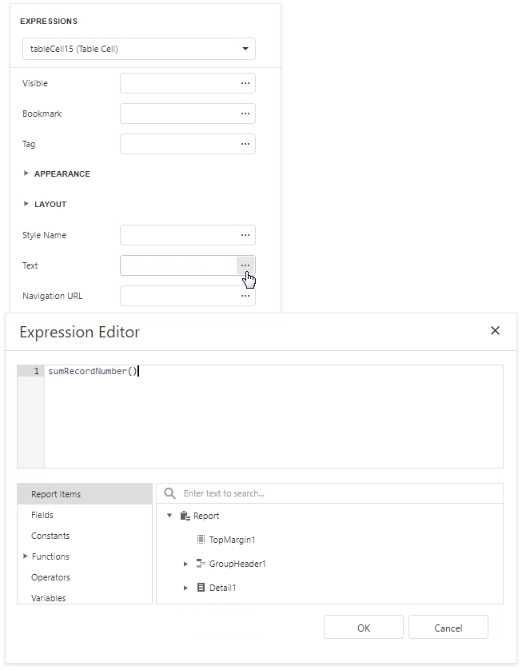
Each row now includes a number.
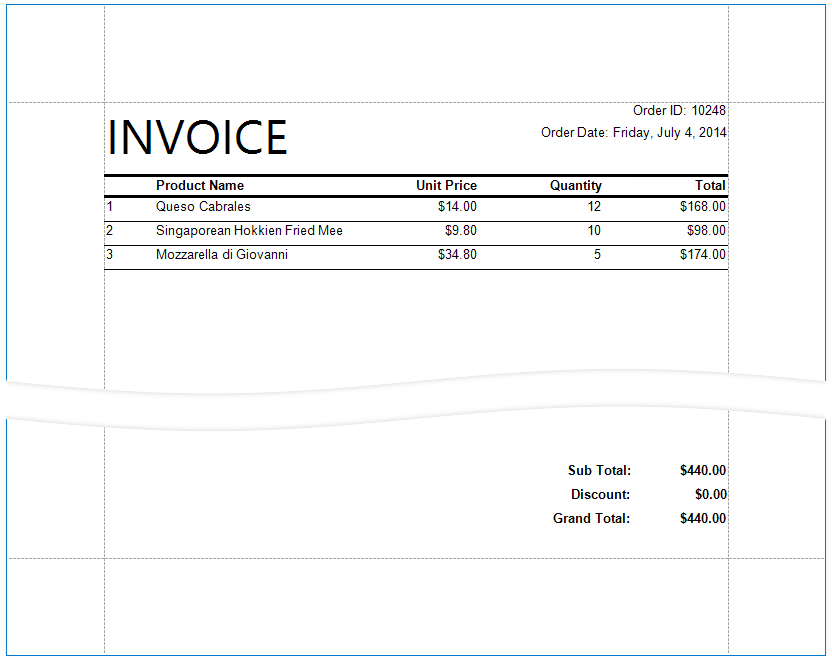
Populate the Empty Space
Populate the empty space between the Detail band's data and the footer.
Select the Detail band and enable the Fill Empty Space property.
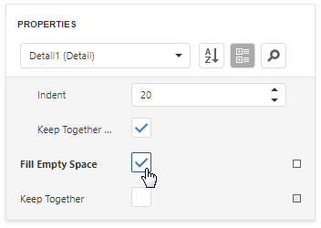
The empty space is now populated with numbered lines.

Note
Set the Text properties of the Detail band's controls to display static text within the added lines.
Add Cross-Band Data
Add a panel with recipient details across the entire group. Place the panel on a separate Group Header band that is printed on the background of other bands.
Select the report and select Insert Group Header from the report's context menu

Tip
Choose a Page Header band instead of the Group Header to display the cross-band content on an entire page.
Select the added band and enable the Print Across Bands property. This displays the band content on the background of the GroupHeader1, Detail, and GroupFooter1 bands.
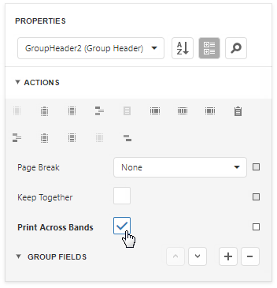
The report's group field is in the GroupHeader1 band's Group Fields collection. The new band is above GroupHeader1 and does not participate in the report's group. Move the group field to the new band.
Select GroupHeader1 and remove the group field from Group Fields.
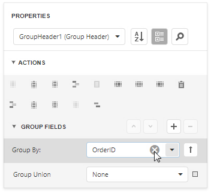
Select the new band and add the group field to Group Fields.
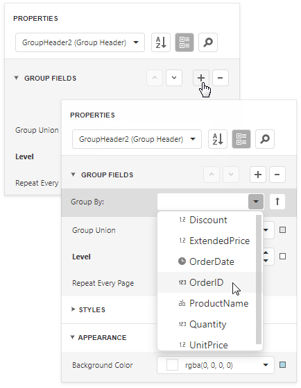
Add a Panel control to the Group Header. Specify the panel's Background Color and drop fields onto the panel.
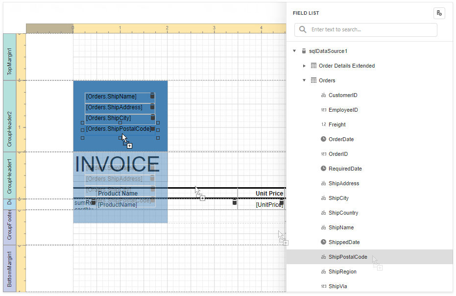
Adjust the panel's width and height. The height should match the page height, as the footer is printed at the bottom of the page (the Group Footer's Print At Bottom property is enabled).
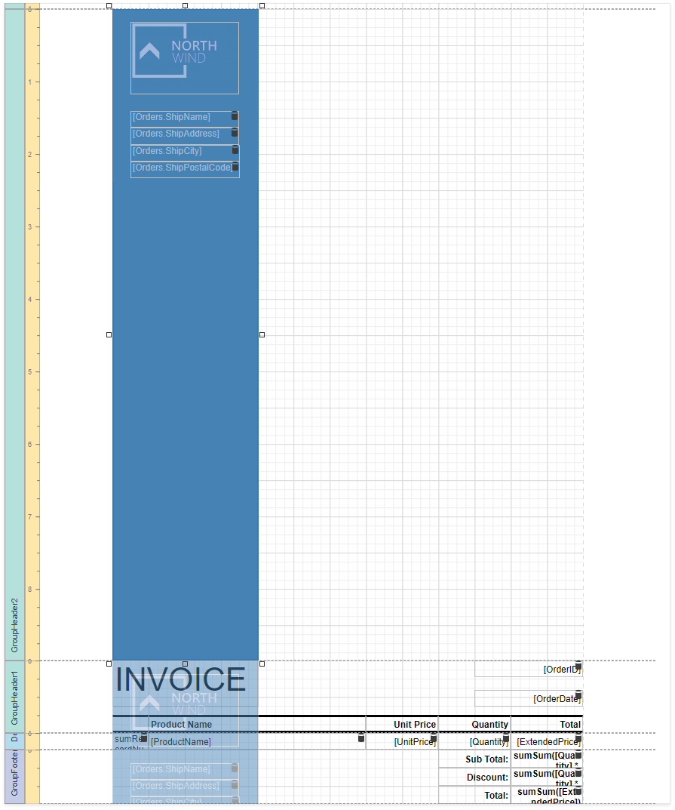
Switch to Print Preview. The panel is printed on the background of the group content.
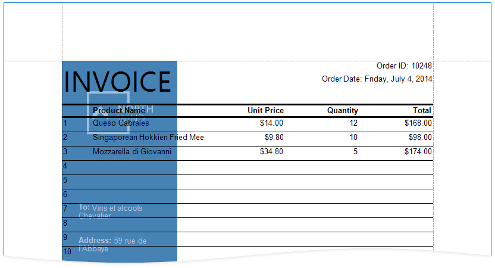
Resize the content in other bands to print it side-by-side with the panel.
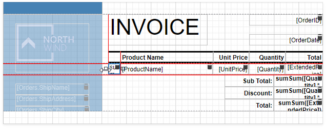
See the final report in Print Preview.